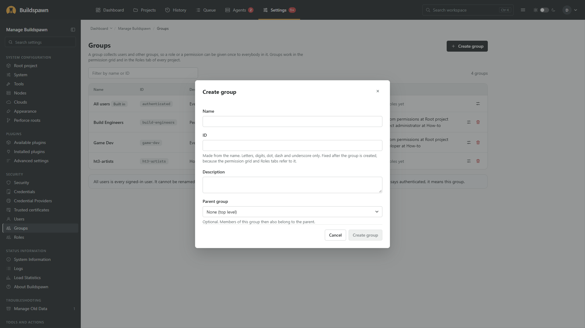
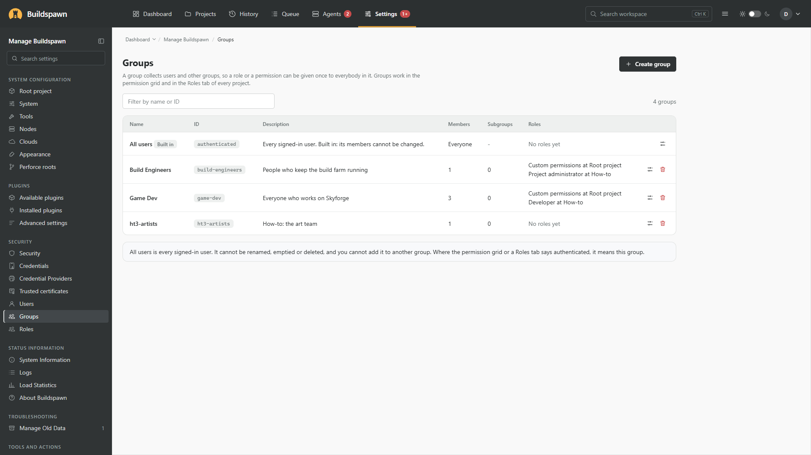

Give a team access to its projects
Put a team in a group and give the group a role on its project, so everyone in it can see and run that project's builds, and nothing else.
Before you start
- You are a system administrator (you have the Overall: Administer permission).
- People sign in with Buildspawn's own user database. With single sign-on, users and their groups come from your identity provider, so skip the parts about creating users.
- Settings › Security › Authorization is set to Project-based security. Only this choice gives every project a Roles tab. With another choice, Settings › Roles shows a yellow note that roles are off.
- The group All users has Overall: Read in the permission cards under Settings › Security. Without it, people can sign in but see nothing at all.
In this example, the art team gets the Developer role on the project How-to: they can see its build configurations, run and stop builds and read the logs.
Steps
Create the group
- Click Settings in the top bar, then Groups under Security.
- Click Create group.
- Type a Name, for example
ht3-artists. The ID is filled in from the name. Change it now if you want, because it can't change later. - Type a Description, for example
The art team. - Leave Parent group at None (top level), unless this team is part of a bigger group that already has roles.
- Click Create group.

Create the users
- Click Users under Security, then Create User.
- Type a Username, for example
ht3-artist. Use letters, digits, dashes and underscores only. - Type the Password twice, the Full name (for example
Alex Artist) and the Email. - Click Create User.
- In the list, click Add to group on the new user's row and pick ht3-artists.
Repeat for each person in the team. Someone who already has an account only needs step 5.
Give the group a role on the project
- Open the project, for example How-to, from the project tree.
- Click the Roles tab.
- Click Assign a role.
- Choose Group and type the group name,
ht3-artists. - Pick the role Developer and click Assign.
- Click Save.
The role applies to the project and everything inside it: its subprojects and build configurations. Which role to pick:
| The team should… | Role |
|---|---|
| see builds and download artifacts | Project viewer |
| also run and stop builds and read settings | Developer |
| also change build configurations and give roles on the project | Project administrator |
Check it worked

- On Settings › Groups, the group's row shows the number of Members and, after you assign it, the role in Roles.
- Open the project's Roles tab. The group is listed with Developer.
- Sign out, and sign in as one of the team (or ask them to). They see the How-to project in the project tree, with a Run button on its build configurations. Other projects are not shown.
Troubleshooting
| Problem | What to do |
|---|---|
| There is no Roles tab on the project. | Authorization is not set to Project-based security. Change it under Settings › Security. Before you save, make sure your own user still has Overall: Administer, or you lock yourself out. |
| The user signs in and sees an empty page, or Access denied. | All users lacks Overall: Read. Add it in the permission cards under Settings › Security. |
| Create User says the user name is not allowed. | User names can only hold letters, digits, underscores and dashes. Write alex-artist instead of alex.artist. |
| The ID on a permission card has a yellow ambiguous label. | A user and a group share that name. Open the row and choose user or group. |
Next steps
- Users and permissions: every role, custom roles and the permission cards.
- Roles, Users and groups and Authorization: each in full.
- With Entra ID, your groups come from Entra ID: see Sign in with Entra ID.
- Projects: how a project passes settings down to everything inside it.
- Start builds from a script with a user that has only the rights the script needs.